pacman::p_load(tidyverse, ggplot2, scales, ggdist, ggridges, ggstatsplot, DT, dplyr, treemapify, corrplot, GGally, factoextra) Take-Home Exercise 1 Technical Report
Visual Analytics for Data Discovery: Motor Insurance Portfolio Analysis
1 Introduction
Insurance companies often face challenges in identifying the underlying causes of poor profitability and high portfolio volatility. While traditional reporting tools provide summary-level insights, they may not fully reveal hidden patterns, risk drivers, or relationships within large and complex insurance datasets. As a result, insurers increasingly rely on visual analytics techniques to support more effective exploratory analysis and data-driven decision-making.
This assignment applies visual analytics methods to a real-world motor vehicle insurance portfolio dataset using R programming and relevant visualisation libraries. Through the use of statistical graphics and interactive visualisations, the analysis aims to explore numerical, categorical, and temporal patterns within the portfolio. The study focuses on identifying key factors that may influence insurance profitability, claim behaviour, and portfolio volatility.
By leveraging visual analytics techniques such as distribution analysis, comparative visualisations, correlation analysis, and multivariate exploration, this investigation seeks to uncover meaningful insights that can support underwriting decisions, portfolio segmentation, and risk management strategies. Ultimately, this assignment demonstrates how visual analytics can enhance understanding of insurance data beyond conventional dashboard reporting approaches.
2 Data Description
The dataset used in this assignment is a real-world motor vehicle insurance portfolio dataset containing policy-level information related to insurance coverage, claims experience, customer characteristics, and vehicle attributes. The dataset is intended to support exploratory visual analytics for identifying factors influencing portfolio profitability and volatility.
The data consists of both numerical and categorical variables collected across multiple insurance policies. Numerical variables include measures such as total premium, total incurred claims, total claims, total exposure, vehicle age, and driver age. These variables provide quantitative insights into policy performance, claims severity, and financial outcomes. Categorical variables include policy type, business type, fuel type, policy status, vehicle brand, and bonus score categories, which allow segmentation and comparative analysis across different customer and policy groups.
3 Installing and Launching R Packages
4 Data Wrangling
4.1 Importing the Dataset
The motor insurance portfolio dataset was imported into R using the read_delim() function because the original CSV file used semicolon (;) delimiters instead of commas.
motor <- read_delim(
"Assignment1/Dataset of motor insurance portfolio.csv",
delim = ";"
) 4.2 Data Cleaning
Several pre-processing steps were performed to prepare the dataset for visual analytics:
- Converted categorical variables into factor data types
- Checked for missing or invalid values
- Standardised variable formats for analysis consistency
motor_clean <- motor %>%
mutate(across(where(is.character), as.factor))4.3 Data Validation and Exploratory Pre-processing
To ensure the dataset was properly imported and transformed, preliminary validation and structure checking were performed using the glimpse() and summary() functions. These functions were used to inspect variable types, identify missing values, and review the overall distribution of numerical variables prior to visual analysis.
The glimpse() function provides an overview of the dataset structure, including variable names, data types, and sample observations, while the summary() function generates descriptive statistics such as minimum, maximum, mean, and quartile values for numerical variables.
glimpse(motor_clean)Rows: 354,140
Columns: 47
$ insured_id <dbl> 1, 2, 2, 2, 3, 3, 3, 4, 4, 4, 5, 5, 5, 6, …
$ year <dbl> 2022, 2022, 2023, 2024, 2022, 2023, 2024, …
$ policy_type <fct> COMP_E, COMP_E, COMP_E, COMP_E, COMP_E, CO…
$ policy_status <fct> C, A, A, A, A, A, A, A, A, A, A, A, A, A, …
$ business_type <fct> NB, P, P, P, NB, P, P, NB, P, P, NB, P, P,…
$ payment_frequency <fct> A, A, A, A, S, S, S, A, A, A, A, A, A, A, …
$ bonus_score <fct> G, G, G, G, G, G, G, G, G, G, G, G, G, G, …
$ driver_age <dbl> 48, 43, 44, 45, 45, 46, 47, 32, 33, 34, 39…
$ vehicle_age <dbl> 22, 24, 25, 26, 26, 27, 28, 12, 13, 14, 20…
$ age_driving_licence <dbl> 26, 19, 19, 18, 19, 19, 19, 19, 19, 19, 19…
$ fuel_type <fct> G, D, D, D, D, D, D, D, D, D, D, D, D, D, …
$ vehicle_value <dbl> 149511.44, 65065.12, 65065.12, 65065.12, 5…
$ seats <dbl> 4, 8, 8, 8, 7, 7, 7, 5, 5, 5, 5, 5, 5, 5, …
$ power_to_weight_ratio <dbl> 3.92, 10.15, 10.15, 10.15, 9.19, 9.19, 9.1…
$ vehicle_brand <fct> PORSCHE, MERCEDES, MERCEDES, MERCEDES, KIA…
$ municipality_type <fct> I, I, I, I, I, I, I, I, I, I, C, I, I, C, …
$ circulation_area <fct> U, U, U, U, R, R, R, R, R, R, R, U, U, R, …
$ total_premium <dbl> 279.5576, 546.6234, 548.7526, 584.6324, 68…
$ liability_premium <dbl> 30.60232, 114.33336, 110.66689, 122.09253,…
$ property_damage_premium <dbl> 121.9127, 303.1060, 304.9560, 305.2251, 35…
$ theft_premium <dbl> 112.361489, 80.784824, 83.521384, 107.8868…
$ fire_premium <dbl> 3.832441, 7.826861, 6.151465, 5.842892, 7.…
$ glass_premium <dbl> 8.305788, 30.091751, 32.861626, 31.101584,…
$ legal_protection_premium <dbl> 2.043622, 7.812747, 7.655637, 10.084173, 6…
$ occupants_premium <dbl> 0.4992053, 2.6679084, 2.9395659, 2.3992827…
$ total_claims <dbl> 0, 0, 1, 2, 0, 0, 0, 0, 0, 0, 0, 0, 0, 5, …
$ liability_claims <dbl> 0, 0, 1, 1, 0, 0, 0, 0, 0, 0, 0, 0, 0, 0, …
$ liability_property_claims <dbl> 0, 0, 1, 1, 0, 0, 0, 0, 0, 0, 0, 0, 0, 0, …
$ liability_injury_claims <dbl> 0, 0, 0, 0, 0, 0, 0, 0, 0, 0, 0, 0, 0, 0, …
$ property_claims <dbl> 0, 0, 0, 1, 0, 0, 0, 0, 0, 0, 0, 0, 0, 5, …
$ theft_claims <dbl> 0, 0, 0, 0, 0, 0, 0, 0, 0, 0, 0, 0, 0, 0, …
$ fire_claims <dbl> 0, 0, 0, 0, 0, 0, 0, 0, 0, 0, 0, 0, 0, 0, …
$ glass_claims <dbl> 0, 0, 0, 0, 0, 0, 0, 0, 0, 0, 0, 0, 0, 0, …
$ legal_protection_claims <dbl> 0, 0, 0, 0, 0, 0, 0, 0, 0, 0, 0, 0, 0, 0, …
$ occupants_claims <dbl> 0, 0, 0, 0, 0, 0, 0, 0, 0, 0, 0, 0, 0, 0, …
$ total_incurred <dbl> 0.000, 0.000, 233.013, 2586.361, 0.000, 0.…
$ liability_incurred <dbl> 0.000, 0.000, 233.013, 1035.000, 0.000, 0.…
$ liability_property_incurred <dbl> 0.000, 0.000, 233.013, 1035.000, 0.000, 0.…
$ liability_injury_incurred <dbl> 0.000, 0.000, 0.000, 0.000, 0.000, 0.000, …
$ property_incurred <dbl> 0.000, 0.000, 0.000, 1551.361, 0.000, 0.00…
$ theft_incurred <dbl> 0, 0, 0, 0, 0, 0, 0, 0, 0, 0, 0, 0, 0, 0, …
$ fire_incurred <dbl> 0, 0, 0, 0, 0, 0, 0, 0, 0, 0, 0, 0, 0, 0, …
$ glass_incurred <dbl> 0, 0, 0, 0, 0, 0, 0, 0, 0, 0, 0, 0, 0, 0, …
$ legal_protection_incurred <dbl> 0, 0, 0, 0, 0, 0, 0, 0, 0, 0, 0, 0, 0, 0, …
$ occupants_incurred <dbl> 0, 0, 0, 0, 0, 0, 0, 0, 0, 0, 0, 0, 0, 0, …
$ total_exposure <dbl> 0.09863014, 1.00000000, 1.00000000, 1.0000…
$ liability_exposure <dbl> 0.09863014, 1.00000000, 1.00000000, 1.0000…summary(motor_clean) insured_id year policy_type policy_status business_type
Min. : 1 Min. :2022 CC :204636 A:315812 NB:245437
1st Qu.: 33342 1st Qu.:2023 COMP_E: 91199 C: 38328 P :108703
Median : 66840 Median :2023 COMP_N: 16181
Mean : 76045 Mean :2023 TP : 5757
3rd Qu.:112949 3rd Qu.:2024 TPG : 36367
Max. :185678 Max. :2024
payment_frequency bonus_score driver_age vehicle_age
A:287897 B: 4731 Min. :18.00 Min. : 0.00
Q: 15396 G:341559 1st Qu.:39.00 1st Qu.:17.00
S: 50847 N: 7850 Median :48.00 Median :25.00
Mean :49.01 Mean :25.92
3rd Qu.:58.00 3rd Qu.:35.00
Max. :90.00 Max. :68.00
NA's :2
age_driving_licence fuel_type vehicle_value seats
Min. : 0.00 D :226402 Min. : 1630 Min. :2.000
1st Qu.:19.00 G :126451 1st Qu.: 18608 1st Qu.:5.000
Median :20.00 NA's: 1287 Median : 24730 Median :5.000
Mean :22.99 Mean : 26977 Mean :5.084
3rd Qu.:25.00 3rd Qu.: 32252 3rd Qu.:5.000
Max. :80.00 Max. :374034 Max. :9.000
NA's :2 NA's :513
power_to_weight_ratio vehicle_brand municipality_type circulation_area
Min. : 0.00 RENAULT : 34354 C :101383 R:163632
1st Qu.:10.74 CITROEN : 32489 I :228617 U:190508
Median :12.05 PEUGEOT : 29574 IS: 24140
Mean :12.33 VOLKSWAGEN: 28791
3rd Qu.:13.73 FORD : 28299
Max. :64.81 OPEL : 27946
(Other) :172687
total_premium liability_premium property_damage_premium theft_premium
Min. : 0.0 Min. : 0.00 Min. : 0.00 Min. : 0.000
1st Qu.: 146.1 1st Qu.: 92.52 1st Qu.: 0.00 1st Qu.: 1.808
Median : 257.9 Median : 165.78 Median : 0.00 Median : 5.902
Mean : 296.7 Mean : 180.71 Mean : 73.52 Mean : 11.249
3rd Qu.: 385.0 3rd Qu.: 237.83 3rd Qu.: 83.62 3rd Qu.: 13.519
Max. :5107.6 Max. :2320.77 Max. :3736.73 Max. :1047.036
fire_premium glass_premium legal_protection_premium occupants_premium
Min. : 0.0000 Min. : 0.000 Min. : 0.000 Min. : 0.0000
1st Qu.: 0.2889 1st Qu.: 7.417 1st Qu.: 3.820 1st Qu.: 0.9441
Median : 0.8644 Median : 15.387 Median : 7.262 Median : 1.8261
Mean : 1.5105 Mean : 19.497 Mean : 8.268 Mean : 1.9651
3rd Qu.: 1.8182 3rd Qu.: 26.912 3rd Qu.: 10.966 3rd Qu.: 2.6200
Max. :72.0891 Max. :387.608 Max. :175.056 Max. :68.6461
total_claims liability_claims liability_property_claims
Min. : 0.0000 Min. :0.0000 Min. :0.00000
1st Qu.: 0.0000 1st Qu.:0.0000 1st Qu.:0.00000
Median : 0.0000 Median :0.0000 Median :0.00000
Mean : 0.2177 Mean :0.1066 Mean :0.09281
3rd Qu.: 0.0000 3rd Qu.:0.0000 3rd Qu.:0.00000
Max. :18.0000 Max. :8.0000 Max. :8.00000
liability_injury_claims property_claims theft_claims
Min. :0.00000 Min. : 0.00000 Min. :0.000000
1st Qu.:0.00000 1st Qu.: 0.00000 1st Qu.:0.000000
Median :0.00000 Median : 0.00000 Median :0.000000
Mean :0.01376 Mean : 0.06295 Mean :0.005326
3rd Qu.:0.00000 3rd Qu.: 0.00000 3rd Qu.:0.000000
Max. :3.00000 Max. :15.00000 Max. :2.000000
fire_claims glass_claims legal_protection_claims
Min. :0.0000000 Min. :0.00000 Min. :0.000000
1st Qu.:0.0000000 1st Qu.:0.00000 1st Qu.:0.000000
Median :0.0000000 Median :0.00000 Median :0.000000
Mean :0.0002824 Mean :0.03271 Mean :0.009753
3rd Qu.:0.0000000 3rd Qu.:0.00000 3rd Qu.:0.000000
Max. :1.0000000 Max. :3.00000 Max. :2.000000
occupants_claims total_incurred liability_incurred
Min. :0.0000000 Min. : 0.0 Min. : 0.0
1st Qu.:0.0000000 1st Qu.: 0.0 1st Qu.: 0.0
Median :0.0000000 Median : 0.0 Median : 0.0
Mean :0.0001214 Mean : 208.6 Mean : 133.7
3rd Qu.:0.0000000 3rd Qu.: 0.0 3rd Qu.: 0.0
Max. :1.0000000 Max. :571128.3 Max. :561759.8
liability_property_incurred liability_injury_incurred property_incurred
Min. : 0.00 Min. : 0.00 Min. : 0.00
1st Qu.: 0.00 1st Qu.: 0.00 1st Qu.: 0.00
Median : 0.00 Median : 0.00 Median : 0.00
Mean : 65.75 Mean : 67.96 Mean : 52.66
3rd Qu.: 0.00 3rd Qu.: 0.00 3rd Qu.: 0.00
Max. :34553.88 Max. :560025.59 Max. :27542.43
theft_incurred fire_incurred glass_incurred
Min. : 0.000 Min. :0.000e+00 Min. : 0.00
1st Qu.: 0.000 1st Qu.:0.000e+00 1st Qu.: 0.00
Median : 0.000 Median :0.000e+00 Median : 0.00
Mean : 4.511 Mean :7.629e-01 Mean : 12.59
3rd Qu.: 0.000 3rd Qu.:0.000e+00 3rd Qu.: 0.00
Max. :40324.888 Max. :2.827e+04 Max. :4533.40
legal_protection_incurred occupants_incurred total_exposure
Min. : 0.000 Min. : 0.000 Min. :0.0000
1st Qu.: 0.000 1st Qu.: 0.000 1st Qu.:0.4438
Median : 0.000 Median : 0.000 Median :0.8384
Mean : 3.323 Mean : 1.013 Mean :0.7069
3rd Qu.: 0.000 3rd Qu.: 0.000 3rd Qu.:1.0000
Max. :9889.851 Max. :69000.000 Max. :1.0000
liability_exposure
Min. :0.0000
1st Qu.:0.4438
Median :0.8384
Mean :0.7069
3rd Qu.:1.0000
Max. :1.0000
4.4 Feature Engineering
Feature engineering was performed to derive additional analytical variables from the raw insurance dataset. These engineered features, including loss ratio, claim frequency, claim severity, underwriting profit, profitability group, driver age group, high risk indicator, provide more meaningful indicators for evaluating portfolio profitability, claims behaviour, and risk exposure.
Here is an explanation to the various derived variables:
Loss Ratio: calculated as total incurred claims divided by total premium, representing portfolio profitability.
Claim Frequency: calculated as total claims divided by total exposure, representing how often the claims occurred.
Claim Severity: calculated as total incurred claims divided by total claims, representing the average cost per claim.
Underwriting Profit: calculated as total premium minus total incurred claims, representing the profitability of individual policies.
Profitability Group: categorised based on loss ratio thresholds, representing whether a policy is profitable, moderately profitable, or loss-making from an underwriting perspective.
Driver Age Group: categorised based on driver age ranges, representing different customer demographic segments for analysing claim behaviour and risk exposure.
High Risk Indicator: derived based on policies with loss ratios greater than 1, representing policies where incurred claims exceed collected premiums and may indicate underwriting concern.
motor_clean <- motor_clean %>%
mutate(
loss_ratio = ifelse(total_premium > 0,
total_incurred / total_premium,
NA),
claim_frequency = ifelse(total_exposure > 0,
total_claims / total_exposure,
NA),
claim_severity = ifelse(total_claims > 0,
total_incurred / total_claims,
NA),
underwriting_profit =
total_premium - total_incurred
) motor_clean <- motor_clean %>%
mutate(
# Profitability Group
profitability_group = case_when(
loss_ratio < 0.6 ~ "Profitable",
loss_ratio < 1 ~ "Moderate",
TRUE ~ "Loss Making"
),
# Driver Age Group
driver_age_group = case_when(
driver_age < 25 ~ "Young",
driver_age < 60 ~ "Adult",
TRUE ~ "Senior"
),
# High Risk Indicator
high_risk = ifelse(
loss_ratio > 1,
"High Risk",
"Normal"
)
) 5 Univariate Visual Analysis
Univariate visual analysis was conducted to examine the individual distribution and characteristics of numerical and categorical variables within the motor insurance portfolio dataset. This analysis helps identify data patterns, concentration, skewness, outliers, and segment composition prior to performing more advanced multivariate analysis.
5.1 Numerical Variables
5.1.2 Distribution of Total Incurred Claims
View Code
# Log-transformed histogram
ggplot(motor_clean, aes(x = "", y = total_incurred)) +
geom_violin(fill = "lightblue", alpha = 0.6) +
geom_boxplot(width = 0.15, fill = "white", outlier.alpha = 0.2) +
coord_cartesian(ylim = c(0, 5000)) +
scale_y_continuous(labels = comma) +
labs(
title = "Distribution of Total Incurred Claims",
x = "",
y = "Total Incurred Claims"
) +
theme_minimal()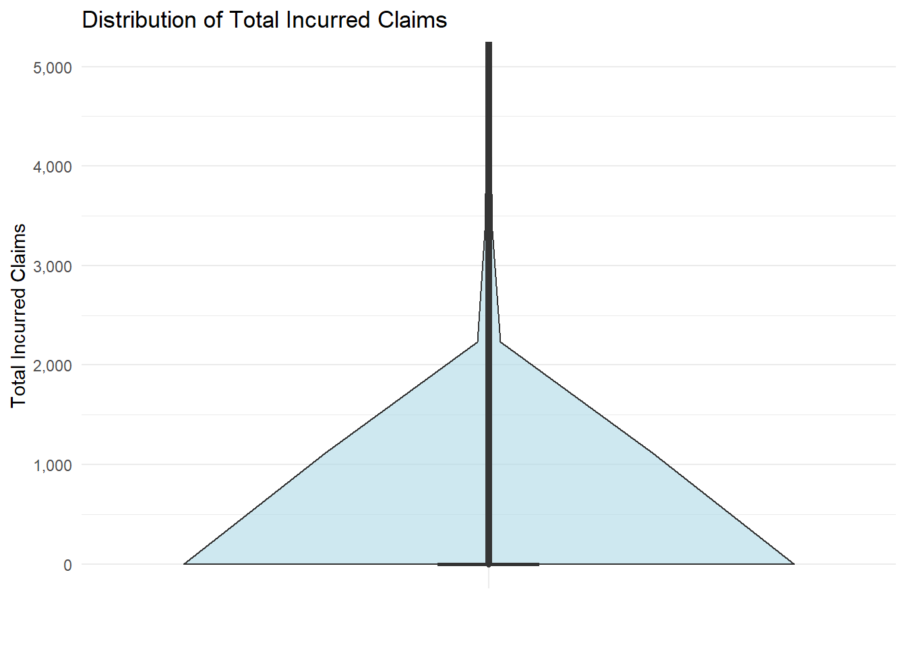
TipObservations:
The violin-boxplot of total incurred claims shows that the distribution is heavily concentrated near lower claims values, indicating that most insurance policies incur relatively small claim amounts. The narrow lower section and compressed boxplot near the bottom suggest that a large proportion of policyholders either make small claims or experience minimal incurred losses.
The distribution also exhibits a long upper tail with numerous extreme outliers extending beyond 5,000. This indicates that a relatively small number of policies generate exceptionally large claims, contributing disproportionately to portfolio volatility and underwriting risk. Such positively skewed claim distributions are commonly observed in insurance portfolios where rare but severe claim events significantly impact profitability.
5.1.3 Loss Ratio Distribution
View Code
ggplot(motor_clean, aes(x = loss_ratio)) +
geom_density(
fill = "lightblue",
alpha = 0.6
) +
coord_cartesian(xlim = c(0, 3)) +
labs(
title = "Density Plot of Loss Ratio",
x = "Loss Ratio",
y = "Density"
) +
theme_minimal()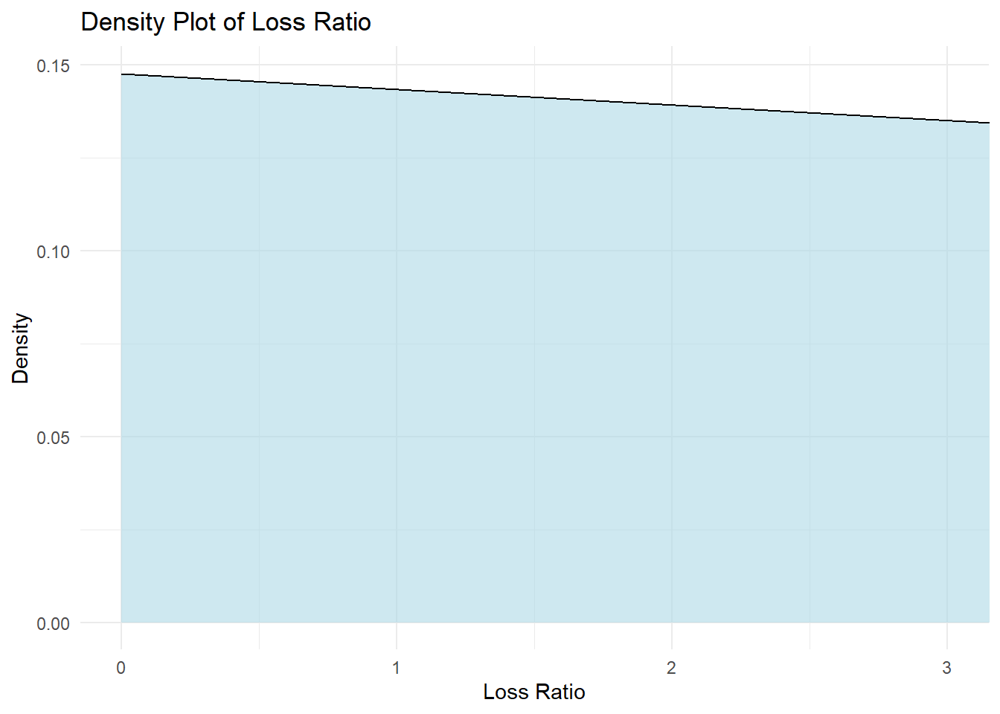
TipObservations:
The density plot of loss ratio shows that the distribution is relatively concentrated within the lower loss ratio range, indicating that a large proportion of insurance policies remain profitable or maintain manageable claims costs relative to collected premiums. This suggests that the insurer’s portfolio is generally stable, with most policies generating acceptable underwriting performance.
The density gradually declines as the loss ratio increases, indicating that fewer policies experience high claims relative to premium earned. Policies with higher loss ratios may represent higher-risk segments or severe claim events that contribute disproportionately to underwriting losses and portfolio volatility. We need to monitor those high-loss-ratio policies for risk management and pricing optimisation purposes.
5.1.4 Distribution of Claim Severity
View Code
ggplot(motor_clean, aes(x = "", y = claim_severity)) +
geom_violin(fill = "lightblue", alpha = 0.6, na.rm = TRUE) +
geom_boxplot(width = 0.15, fill = "white", outlier.alpha = 0.2, na.rm = TRUE) +
coord_cartesian(ylim = c(0, 5000)) +
scale_y_continuous(labels = comma) +
labs(
title = "Distribution of Claim Severity",
x = "",
y = "Claim Severity"
) +
theme_minimal()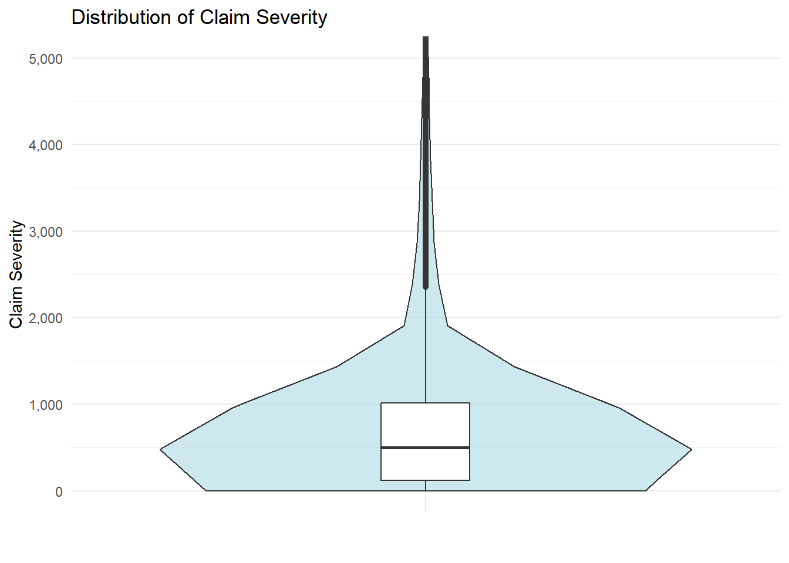
TipObservations:
The violin-boxplot of claim severity shows that the distribution is positively skewed, with most claims concentrated within the lower-to-middle severity range. The widest portion of the violin plot appears around lower claim severity values, indicating that the majority of claims incur relatively moderate costs per claim event. The median claim severity, represented by the line inside the boxplot, is positioned below the midpoint of the distribution, suggesting that typical claim costs remain relatively manageable for most policies.
However, the distribution also exhibits a long upper tail with numerous high-value outliers extending beyond 5,000. This indicates the presence of a smaller number of severe claim events that incur exceptionally high costs. These extreme claims contribute disproportionately to portfolio volatility and financial risk, highlighting the importance of monitoring claim severity for pricing, reserving, and underwriting purposes. The positively skewed pattern is consistent with typical insurance claim behaviour, where infrequent but costly events significantly impact overall claims performance.
5.1.5 Distribution of Claim Frequency
View Code
ggplot(motor_clean,
aes(x = claim_frequency)) +
geom_density(
fill = "lightblue",
alpha = 0.6
) +
coord_cartesian(xlim = c(0, 5)) +
labs(
title = "Density Plot of Claim Frequency",
x = "Claim Frequency",
y = "Density"
) +
theme_minimal()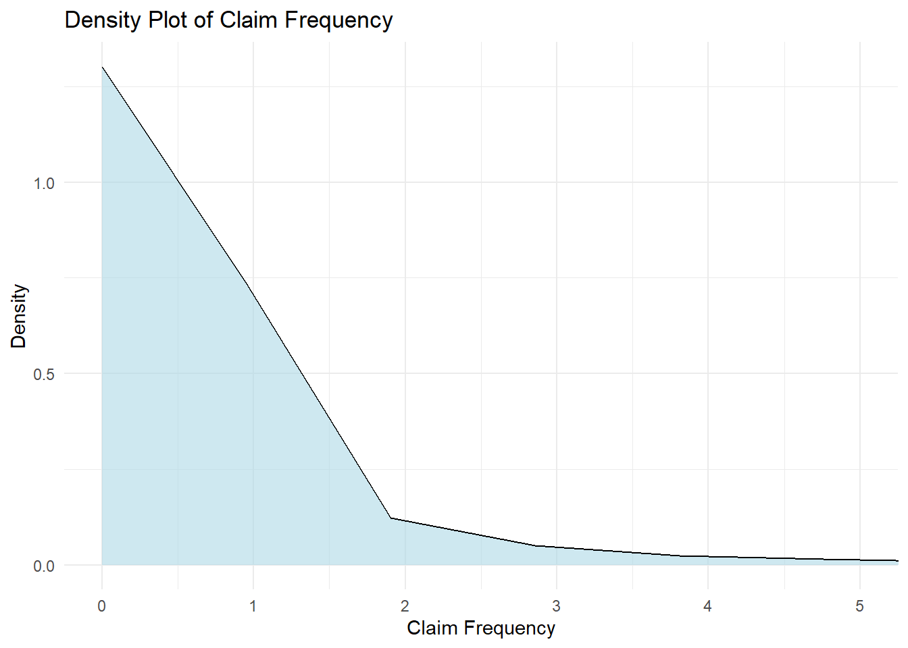
TipObservations:
The density plot of claim frequency shows that the distribution is heavily concentrated near lower claim frequency values, indicating that the majority of policyholders make claims infrequently. The sharp decline in density as claim frequency increases suggests that most insurance policies experience few claim occurrences within the observed exposure period.
The distribution also exhibits a long right tail extending toward higher claim frequency values, indicating that a smaller proportion of policyholders generate claims more frequently. These higher-frequency claimants may represent higher-risk customer segments that contribute disproportionately to portfolio volatility and claims costs. The positively skewed pattern is typical in insurance portfolios, where most customers generate limited claims activity while a small subset demonstrates repeated claim behaviour.
5.2 Categorical Variables
5.2.1 Distribution of Policy Type
View Code
ggplot(motor_clean, aes(x = policy_type)) +
geom_bar(fill = "lightblue") +
labs(
title = "Distribution of Policy Type",
subtitle =
"CC = Third-party Liability Coverage, COMP_E = Comprehensive with Excess\n
COMP_N = Comprehensive without Excess, TP = Basic Third-party Liability Coverage\n
TPG = Third-party Liability with Glass Coverage",
x = "Policy Type",
y = "Number of Policies"
) +
theme_minimal() +
theme(
plot.subtitle = element_text(
size = 10,
lineheight = 0.8
)
)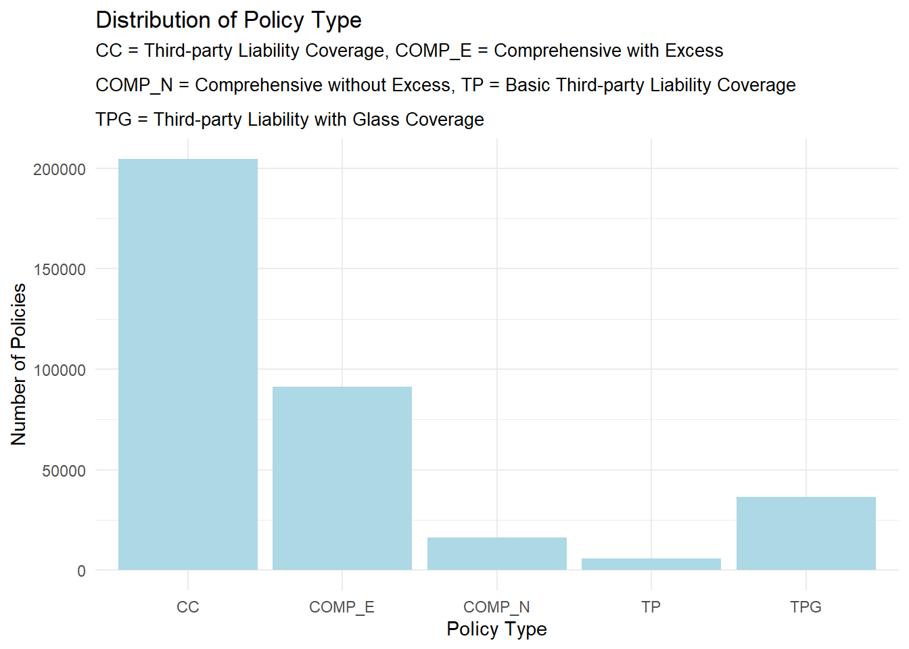
TipObservations:
The bar chart shows that the
CCpolicy type dominates the insurance portfolio, accounting for the largest proportion of policies by a substantial margin. This suggests that comprehensive coverage policies are the most commonly purchased insurance products among policyholders, indicating stronger market demand or broader coverage preferences within the portfolio.COMP_Erepresents the second most common policy type, whileTPG,COMP_N, andTPaccount for comparatively smaller proportions of the portfolio. In particular,TPpolicies form only a very small segment, indicating limited adoption of this coverage type. The uneven distribution across policy types suggests that the insurer’s portfolio is highly concentrated within selected insurance products, which may have implications for underwriting strategy, pricing structure, and portfolio risk diversification.
5.2.2 Distribution of Business Type
View Code
ggplot(motor_clean, aes(x = business_type)) +
geom_bar(fill = "lightblue") +
labs(
title = "Distribution of Business Type",
subtitle = "NB = New Business, P = Portfolio",
x = "Business Type",
y = "Number of Policies"
) +
theme_minimal()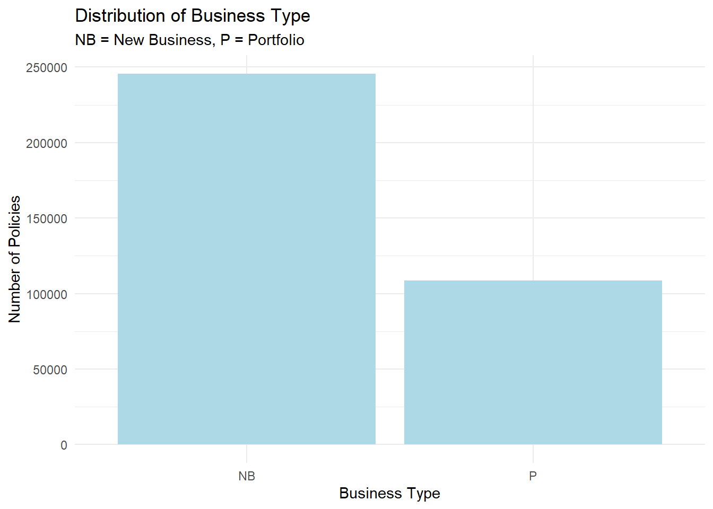
TipObservations:
The bar chart indicates that the
NBbusiness type constitutes the majority of the insurance portfolio, significantly exceeding the number ofPpolicies. This suggests that new business policies dominate the insurer’s portfolio composition, indicating stronger acquisition activity or a larger inflow of newly issued policies during the observed period.In contrast, the
Pbusiness type represents a smaller proportion of the portfolio. The imbalance between the two business types may reflect differences in underwriting focus, customer acquisition strategy, or policy renewal behaviour. A portfolio heavily concentrated in new business policies may also imply greater exposure to underwriting uncertainty, as newly acquired policyholders may have less established claims history compared to existing customers.
5.2.3 Distribution of Policy Status
View Code
ggplot(motor_clean,
aes(x = policy_status)) +
geom_bar(fill = "lightblue") +
scale_y_continuous(labels = scales::comma) +
labs(
title = "Distribution of Policy Status",
subtitle = "A = Active Policy, C = Cancelled Policy",
x = "Policy Status",
y = "Number of Policies"
) +
theme_minimal()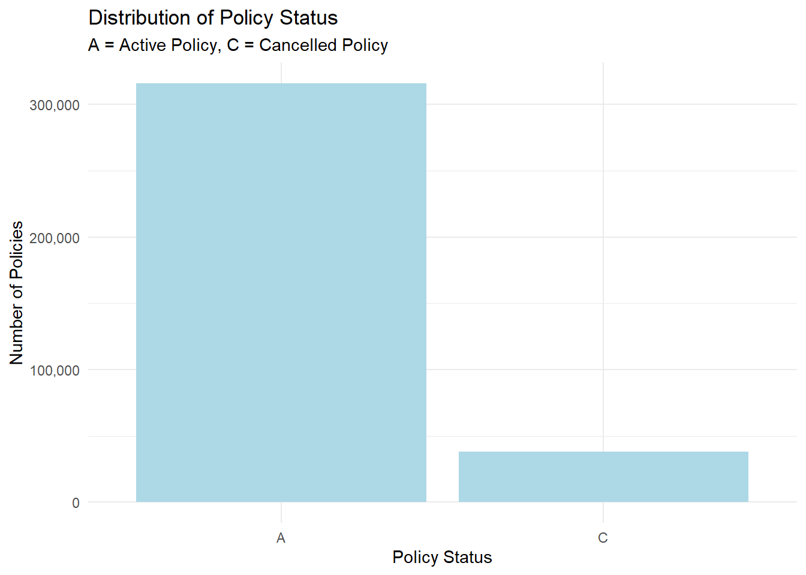
TipObservations:
The bar chart shows that the majority of policies are categorised under policy status
A, while only a much smaller proportion falls under statusC. This indicates that most policies within the portfolio remain active or valid during the observed period, suggesting a relatively stable portfolio with strong policy retention.In contrast, the smaller number of
Cstatus policies may represent cancelled, closed, or inactive policies depending on the insurer’s classification system. The significant imbalance between the two categories suggests that inactive or terminated policies form only a minor portion of the portfolio, which may indicate favourable customer retention and policy continuity.
5.2.4 Distribution of Profitability Group
View Code
ggplot(motor_clean,
aes(x = profitability_group)) +
geom_bar(fill = "lightblue") +
scale_y_continuous(labels = scales::comma) +
labs(
title = "Distribution of Profitability Group",
x = "Profitability Group",
y = "Number of Policies"
) +
theme_minimal()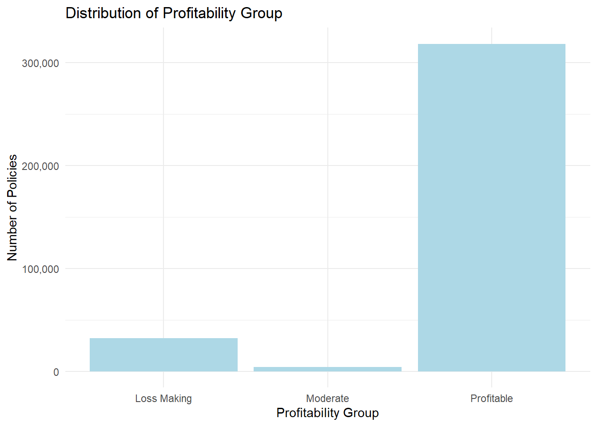
TipObservations:
The bar chart shows that the majority of policies fall within the
Profitablecategory, indicating that most policies generate premiums that exceed incurred claims. This suggests that the overall insurance portfolio remains financially sustainable, with profitable policies forming the dominant segment of the portfolio.In comparison, a smaller proportion of policies are classified as
Loss Making, while only a very limited number fall within theModeratecategory. The relatively lower number of loss-making policies indicates that underwriting performance is generally well controlled, although the existence of these policies highlights areas where claim costs exceed collected premiums and may require closer risk monitoring or pricing adjustments.
5.2.5 Distribution of High-Risk Policies
View Code
ggplot(
motor_clean %>%
filter(!is.na(high_risk)),
aes(x = high_risk)
) +
geom_bar(fill = "lightblue") +
scale_y_continuous(labels = scales::comma) +
labs(
title = "Distribution of High-Risk Policies",
x = "Risk Category",
y = "Number of Policies"
) +
theme_minimal()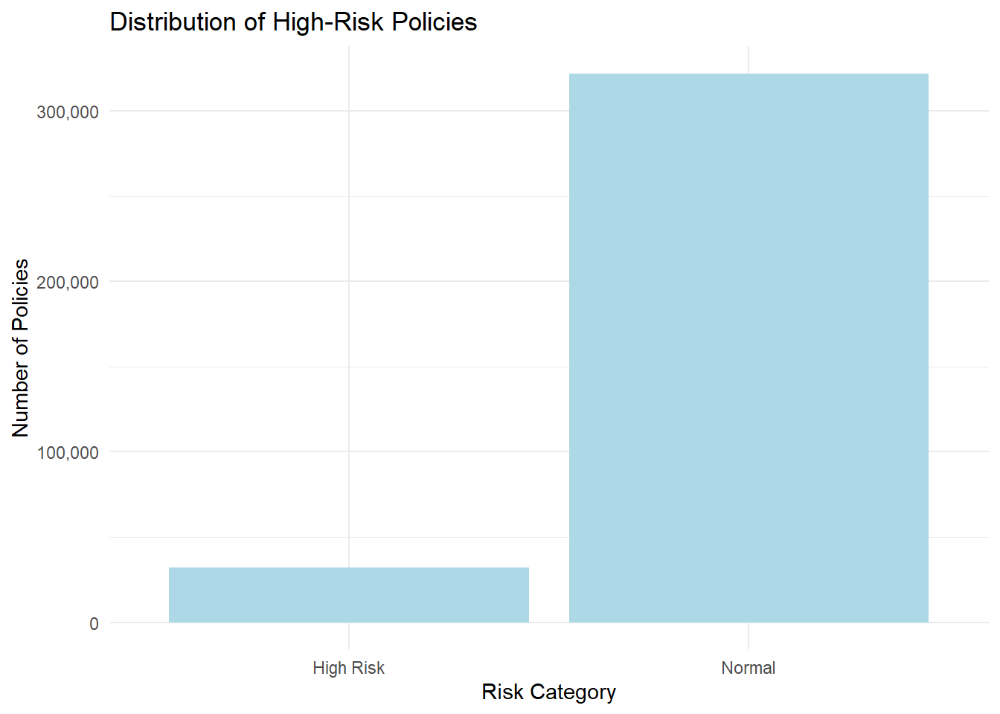
TipObservations:
The bar chart shows that the majority of policies fall under the
Normalrisk category, while only a smaller proportion are classified asHigh Risk. This indicates that most policies within the insurance portfolio maintain acceptable loss ratio levels, suggesting relatively stable underwriting performance across the portfolio.In contrast, the smaller number of high-risk policies represents policies where incurred claims exceed collected premiums, indicating potentially unprofitable or volatile underwriting segments. Although these policies form a minority of the portfolio, they may contribute disproportionately to financial risk and claims volatility, highlighting the importance of risk monitoring, pricing adjustments, and targeted underwriting controls for high-risk customer segments.
Overall Insights
Overall, the univariate analysis provides important insights into the underlying structure and distribution of the insurance portfolio dataset. The findings reveal skewed financial distributions, the presence of extreme claim observations, and meaningful categorical segmentation patterns that may influence underwriting performance and portfolio risk. These observations establish the foundation for subsequent bivariate and multivariate visual analysis.
6 Bivariate Visual Analysis
Bivariate visual analysis was conducted to examine the relationships and interactions between key variables within the motor insurance portfolio dataset in order to identify factors influencing profitability and claims volatility. Through the use of comparative and relationship-based visual analytics techniques, the analysis explores how variables such as policy type, business type, claim severity, loss ratio, and risk category are associated with underwriting performance and portfolio risk exposure. This helps uncover hidden patterns, segment differences, correlations, and high-risk areas that support more effective underwriting, pricing, and risk management decisions.
6.1 Claim Severity VS Driver Age Group
View Code
ggplot(motor_clean,
aes(x = driver_age_group,
y = claim_severity,
fill = driver_age_group)) +
geom_violin(alpha = 0.5) +
geom_boxplot(
width = 0.1,
outlier.alpha = 0.2,
fill = "white"
) +
coord_cartesian(ylim = c(0, 5000)) +
labs(
title = "Claim Severity by Driver Age Group",
subtitle =
"Comparison of average claim costs across driver age segments",
x = "Driver Age Group",
y = "Claim Severity"
) +
theme_minimal() +
theme(
legend.position = "none"
)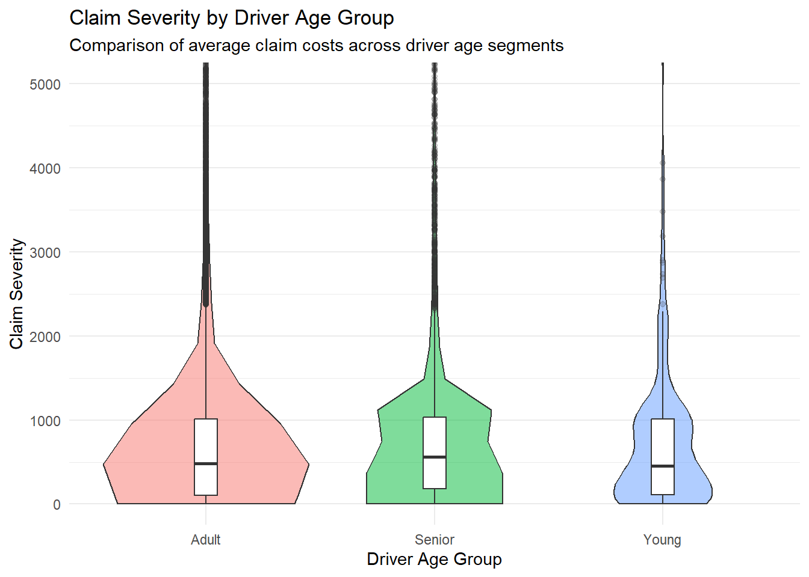
TipObservations:
The violin plot reveals that claim severity distributions differ across driver age groups, although all groups exhibit substantial variability and a strong right-skewed distribution. Most claim severity values are concentrated at lower to moderate claim amounts, as shown by the wider portions near the lower range of the violins, while the long upper tails indicate the presence of relatively rare but extremely costly claims.
Among the three groups, senior drivers appear to have a slightly higher median claim severity and a broader spread in the interquartile range, suggesting greater volatility and potentially higher financial risk exposure. Young drivers also demonstrate considerable variability with several high-cost outliers, while adult drivers show comparatively more stable claim severity distributions. Overall, the analysis suggests that driver age may influence claim cost behaviour and should be considered in underwriting, pricing, and risk segmentation strategies.
6.3 Profitability Group VS Business Type
View Code
ggplot(
motor_clean,
aes(
x = business_type,
fill = profitability_group
)
) +
geom_bar(position = "fill") +
scale_y_continuous(labels = scales::percent) +
scale_fill_manual(
values = c(
"Loss Making" = "#F4A6A6",
"Moderate" = "#63D28A",
"Profitable" = "#7DA7F7"
)
) +
labs(
title = "Profitability Group by Business Type",
subtitle =
"Comparison of profitability composition across business types",
x = "Business Type",
y = "Proportion",
fill = "Profitability Group"
) +
theme_minimal()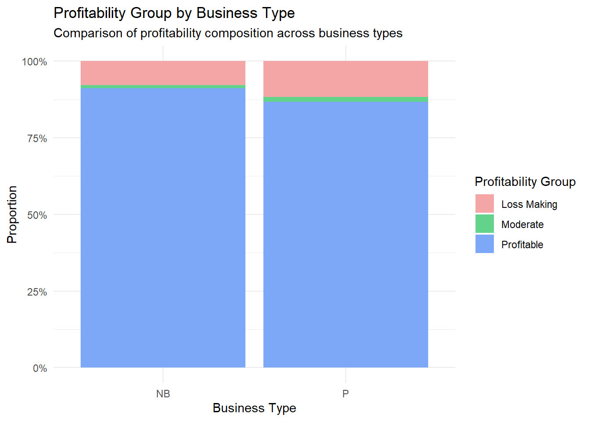
TipObservations:
The stacked proportional bar chart shows that the majority of policies in both business types (
NBandP) fall within the “Profitable” category, indicating that most policies generate premiums that sufficiently cover incurred claims. This suggests that the overall insurance portfolio demonstrates relatively strong underwriting performance and profitability across both business segments.However, business type
Pappears to contain a slightly higher proportion of “Loss Making” policies compared toNB, as indicated by the larger pink segment. This may imply that policies under business typePare associated with greater underwriting risk or higher claims volatility. In contrast,NBexhibits a marginally higher proportion of profitable policies, suggesting comparatively stronger underwriting outcomes. The “Moderate” category remains very small across both business types, indicating that most policies are either clearly profitable or clearly loss-making rather than falling within intermediate profitability ranges.
6.4 High Risk VS Policy Status
View Code
ggplot(
motor_clean %>%
filter(!is.na(high_risk)),
aes(
x = policy_status,
fill = high_risk
)
) +
geom_bar(position = "dodge") +
scale_fill_manual(
values = c(
"High Risk" = "#F4A6A6",
"Normal" = "#7DA7F7"
)
) +
scale_y_continuous(labels = scales::comma) +
labs(
title = "High-Risk Policies by Policy Status",
subtitle =
"Comparison of risk categories across policy status groups",
x = "Policy Status",
y = "Number of Policies",
fill = "Risk Category"
) +
theme_minimal()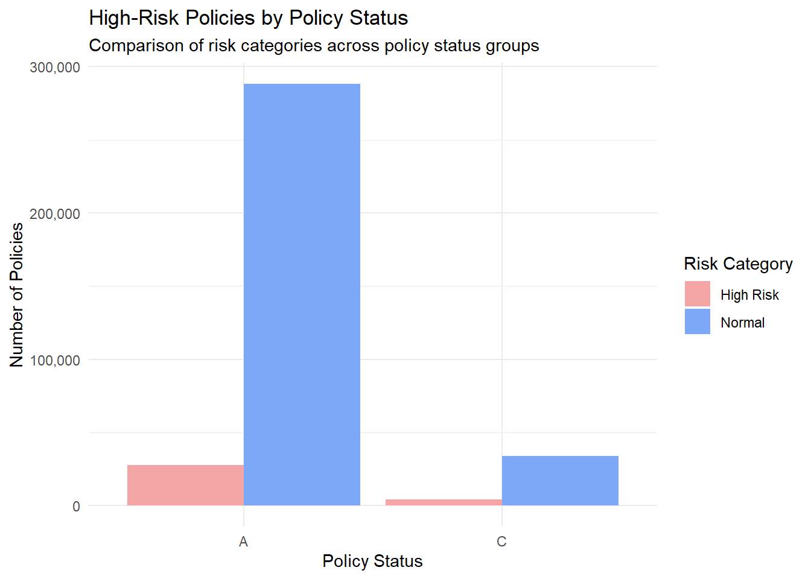
TipObservations:
The grouped bar chart shows that the majority of policies in both policy status categories are classified as “Normal” risk rather than “High Risk,” indicating that most policies maintain relatively acceptable underwriting performance and manageable loss ratios. Active policies (
A) constitute the largest portion of the portfolio and therefore naturally account for the highest number of both normal and high-risk policies.Although cancelled policies (
C) represent a much smaller proportion of the portfolio, the presence of high-risk policies within this category may suggest that poor underwriting performance or elevated claims experience could contribute to policy cancellations. The chart also highlights that high-risk policies remain a relatively small segment overall compared to normal-risk policies, suggesting that the insurer’s portfolio is largely composed of lower-risk business exposures.
6.5 Average Loss Ratio by Policy Type and Business Type
“Where are the risky combinations?”
View Code
heatmap_data <- motor_clean %>%
group_by(policy_type, business_type) %>%
summarise(
avg_loss_ratio = mean(loss_ratio, na.rm = TRUE),
)
ggplot(
heatmap_data,
aes(
x = business_type,
y = policy_type,
fill = avg_loss_ratio
)
) +
geom_tile(color = "white") +
scale_fill_gradient(
low = "lightblue",
high = "darkred"
) +
labs(
title = "Average Loss Ratio Heatmap",
subtitle =
"Darker colours indicate higher average loss ratios",
x = "Business Type",
y = "Policy Type",
fill = "Avg Loss Ratio"
) +
theme_minimal()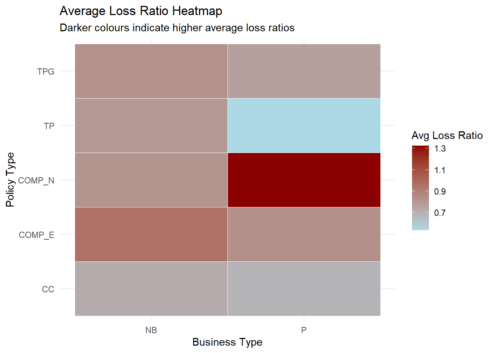
TipObservations:
The heatmap reveals noticeable differences in average loss ratios across combinations of policy type and business type, indicating varying levels of underwriting profitability within the insurance portfolio. Darker colour intensities represent higher average loss ratios, suggesting segments where incurred claims are relatively high compared to collected premiums and where underwriting profitability may be weaker.
Among the policy categories,
COMP_Nunder business typePexhibits the darkest colour intensity, indicating the highest average loss ratio and potentially the greatest underwriting risk exposure. In contrast, policy types such asTPandCCdisplay lighter shades in certain business segments, suggesting comparatively lower average loss ratios and stronger profitability performance. The heatmap highlights how profitability can vary significantly across product and business combinations, demonstrating the importance of segment-specific pricing, underwriting controls, and portfolio monitoring strategies.
6.6 Portfolio Composition by Policy Type and Profitability
“Which business segments are largest, and are they profitable?”
View Code
treemap_data <- motor_clean %>%
group_by(policy_type) %>%
summarise(
total_premium_sum = sum(total_premium, na.rm = TRUE),
avg_loss_ratio = mean(loss_ratio, na.rm = TRUE),
.groups = "drop"
)
ggplot(
treemap_data,
aes(
area = total_premium_sum,
fill = avg_loss_ratio,
label = policy_type
)
) +
geom_treemap() +
geom_treemap_text(
colour = "white",
place = "centre",
grow = TRUE
) +
scale_fill_gradient(
low = "lightblue",
high = "darkred"
) +
labs(
title = "Treemap of Total Premium by Policy Type",
subtitle = "Rectangle size represents total premium volume; colour represents average loss ratio",
fill = "Avg Loss Ratio"
) +
theme_minimal()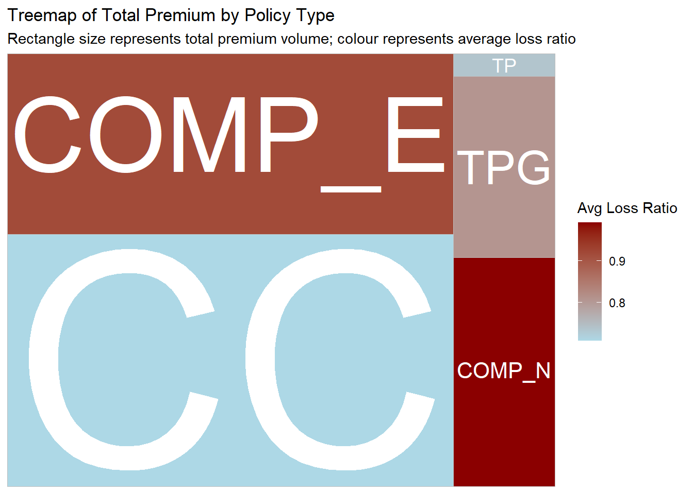
TipObservations:
The treemap illustrates the distribution of total premium volume across different policy types, where larger rectangles represent policy categories contributing a greater share of premium revenue within the insurance portfolio. The
CCandCOMP_Epolicy types occupy the largest areas, indicating that these products dominate the portfolio in terms of premium generation and customer concentration. In contrast, policy types such asTP,TPG, andCOMP_Ncontribute comparatively smaller premium volumes.The colour intensity represents the average loss ratio associated with each policy type, providing insight into underwriting profitability alongside portfolio size.
COMP_Ndisplays the darkest red shade, indicating the highest average loss ratio and potentially the weakest underwriting profitability among the policy categories despite its relatively smaller premium contribution. Conversely,CCexhibits a lighter shade, suggesting comparatively lower average loss ratios and stronger underwriting performance. This combined visualisation highlights the importance of balancing portfolio growth with profitability, as high-premium segments do not necessarily correspond to high underwriting risk, while smaller segments may still contribute disproportionately to portfolio volatility.
While the heatmap focuses on identifying profitability patterns across combinations of policy type and business type, the treemap additionally incorporates portfolio size by representing premium volume through rectangle area. Together, these visualisations provide complementary insights into both underwriting performance and portfolio composition.
Overall Insights
The bivariate visual analysis revealed several important insights regarding the profitability and volatility of the motor insurance portfolio. Overall, the portfolio appears to remain largely profitable, as most policies fall within the profitable category and exhibit relatively low loss ratios. However, significant variability and underwriting volatility are still present across different policy segments, particularly within certain policy types and customer groups. The analysis also showed that claim severity distributions are highly right-skewed, indicating that while most claims are relatively moderate in value, a smaller number of extreme claims contribute disproportionately to portfolio risk exposure and financial uncertainty.
The heatmap and treemap analyses further highlighted that underwriting performance differs considerably across combinations of policy type and business type. Certain segments, such as COMP_N, demonstrated comparatively higher average loss ratios despite contributing smaller premium volumes, suggesting potential profitability concerns and elevated underwriting risk. Additionally, the scatterplot analysis showed only a weak-to-moderate relationship between premium collected and incurred claims, implying that premium alone may not fully explain claims behaviour and that other customer, policy, or risk-related variables may play important roles.
Based on these findings, several additional analyses can be conducted to further strengthen the investigation.
7 Multivariate Visual Analysis
7.1 Correlation Heatmap of Key Insurance Portfolio Variables
View Code
corr_data <- motor_clean %>%
select(
total_premium,
total_incurred,
loss_ratio,
claim_frequency,
claim_severity,
underwriting_profit
)
corr_matrix <- cor(
corr_data,
use = "complete.obs"
)
corrplot(
corr_matrix,
method = "color",
type = "upper",
addCoef.col = "black",
tl.col = "black",
number.cex = 0.7,
col = colorRampPalette(
c(
"#A9D3E0",
"#B79A95",
"#B30000"
)
)(200)
) 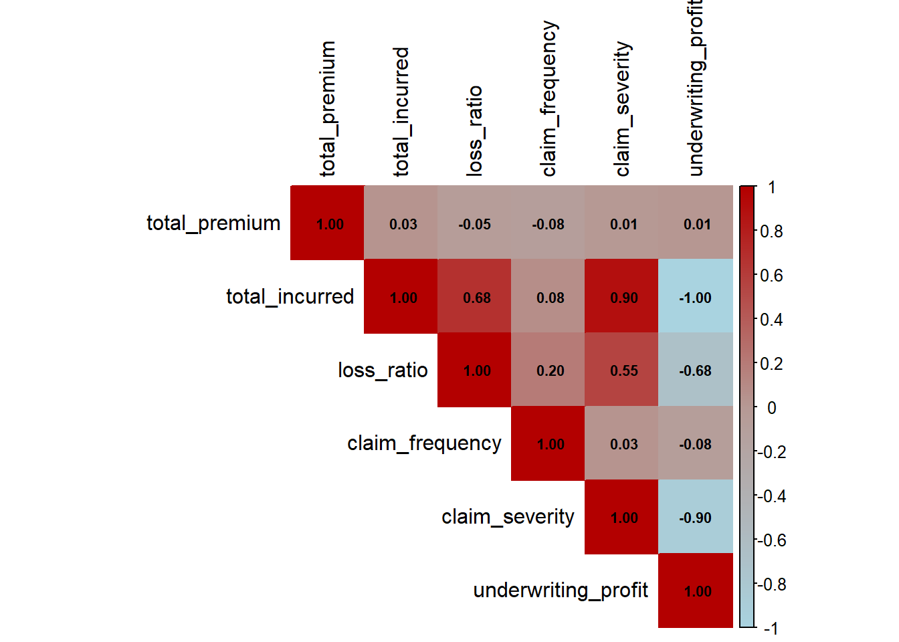
TipObservations:
The correlation heatmap highlights the strength and direction of relationships among key numerical variables within the insurance portfolio. A very strong positive correlation is observed between
total_incurredandclaim_severity(0.90), indicating that higher claim costs are closely associated with more severe claims. Similarly,total_incurredalso shows a strong positive relationship withloss_ratio(0.68), suggesting that increased claims significantly reduce underwriting profitability.Strong negative correlations are observed between
underwriting_profitand bothtotal_incurred(-1.00) andclaim_severity(-0.90). This indicates that higher claims and more severe claim events directly reduce underwriting profits. In contrast,claim_frequencydemonstrates relatively weak correlations with most variables, implying that claim severity has a greater financial impact on portfolio profitability than claim occurrence frequency alone.Additionally,
total_premiumexhibits only weak relationships with most variables, suggesting that premium size alone may not be a strong predictor of claims behaviour or underwriting performance. Overall, the analysis identifies claim severity and incurred claims as the most influential drivers of portfolio risk and profitability.
7.2 Pairwise Relationship Analysis of Key Insurance Portfolio Variables
View Code
pair_data <- motor_clean %>%
select(
total_premium,
total_incurred,
loss_ratio,
claim_frequency,
claim_severity
) %>%
sample_n(2000)
ggpairs(pair_data)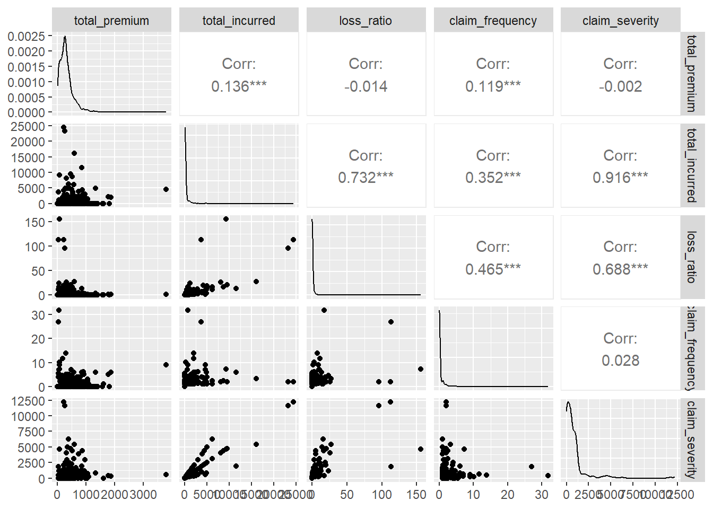
TipObservations:
The pairwise relationship plot provides a comprehensive overview of the relationships among key numerical variables within the insurance portfolio, including
total_premium,total_incurred,loss_ratio,claim_frequency, andclaim_severity. The diagonal density plots indicate that most variables are heavily right-skewed, with the majority of observations concentrated at lower values and a small number of extreme outliers. This suggests that the portfolio contains many low-cost policies and claims, alongside a limited number of high-severity cases that contribute disproportionately to overall volatility.Strong positive correlations are observed between
total_incurredandclaim_severity(0.813), as well as betweentotal_incurredandloss_ratio(0.735), indicating that higher claims severity significantly increases incurred losses and reduces underwriting profitability.Loss_ratioalso demonstrates moderate positive relationships with bothclaim_frequencyandclaim_severity, suggesting that both claim occurrence and claim size contribute to underwriting risk. In contrast,total_premiumexhibits relatively weak correlations with the other variables, implying that premium size alone is not a strong predictor of claims behaviour or profitability outcomes. Overall, the analysis highlights claim severity and incurred claims as the primary drivers of portfolio risk exposure and underwriting performance.
7.3 Cluster Analysis of Insurance Policy Risk Profiles
View Code
set.seed(123)
cluster_data <- motor_clean %>%
select(
loss_ratio,
claim_frequency,
claim_severity,
underwriting_profit
) %>%
na.omit() %>%
sample_n(3000)
scaled_data <- scale(cluster_data)
kmeans_result <- kmeans(
scaled_data,
centers = 3,
nstart = 25
)
fviz_cluster(
kmeans_result,
data = scaled_data,
geom = "point",
ellipse.type = "norm",
palette = c(
"#F4A6A6", # soft pink
"#63D28A", # soft green
"#7DA7F7" # soft blue
),
ggtheme = theme_minimal()
)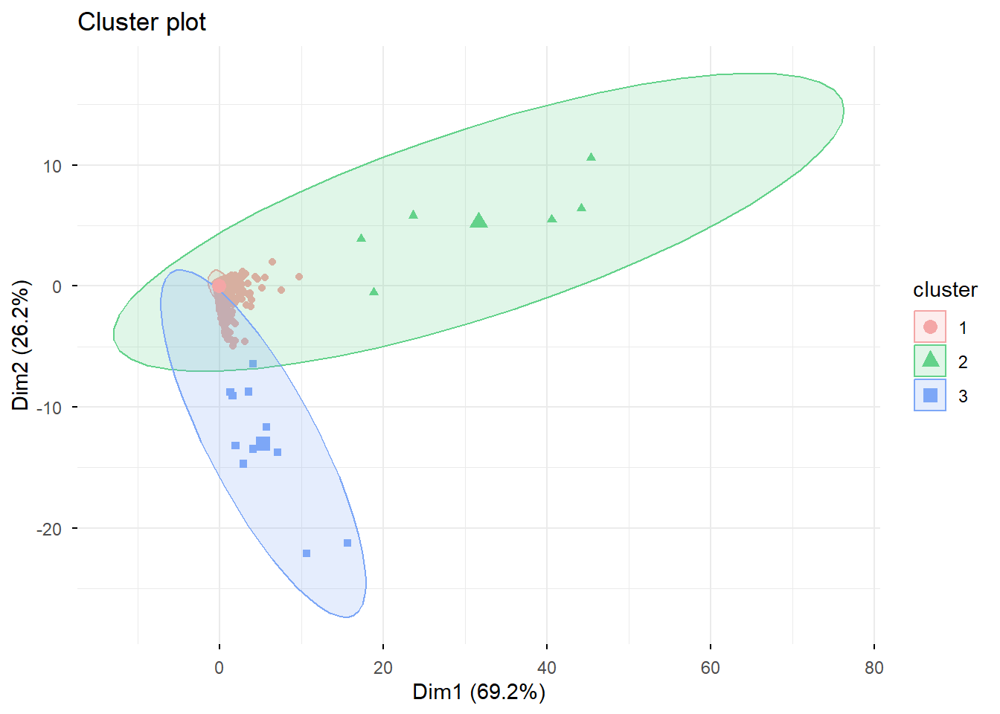
TipObservations:
The cluster analysis identifies three distinct groups of insurance policies based on underwriting profitability, claim severity, claim frequency, and loss ratio characteristics. Cluster 1 (pink) appears to represent the largest and most concentrated group, with observations located close to the centre of the plot. This suggests that the majority of policies exhibit relatively moderate claims behaviour and more stable underwriting performance.
Cluster 2 (green) is more widely dispersed and extends further along the positive Dim1 direction, indicating policies with greater variability and potentially higher-risk characteristics such as elevated claim severity, higher loss ratios, or reduced underwriting profitability. In contrast, Cluster 3 (blue) is separated along the negative Dim2 direction, suggesting another distinct policy segment with different claims behaviour and financial risk characteristics. Overall, the clear separation between clusters indicates that the insurance portfolio contains heterogeneous policy groups, highlighting opportunities for improved risk segmentation, pricing differentiation, and targeted underwriting strategies.
7.4 Statistical Validation of Underwriting Profit Drivers
View Code
model <- lm(
underwriting_profit ~
total_incurred +
loss_ratio +
claim_frequency +
claim_severity,
data = motor_clean
)
summary(model)
Call:
lm(formula = underwriting_profit ~ total_incurred + loss_ratio +
claim_frequency + claim_severity, data = motor_clean)
Residuals:
Min 1Q Median 3Q Max
-2241.2 -174.4 -68.8 102.0 4685.0
Coefficients:
Estimate Std. Error t value Pr(>|t|)
(Intercept) 4.267e+02 1.425e+00 299.33 <2e-16 ***
total_incurred -9.861e-01 5.510e-04 -1789.73 <2e-16 ***
loss_ratio -6.527e-01 2.934e-02 -22.25 <2e-16 ***
claim_frequency -4.074e+00 2.624e-01 -15.53 <2e-16 ***
claim_severity -1.670e-02 9.732e-04 -17.16 <2e-16 ***
---
Signif. codes: 0 '***' 0.001 '**' 0.01 '*' 0.05 '.' 0.1 ' ' 1
Residual standard error: 278.9 on 50801 degrees of freedom
(303334 observations deleted due to missingness)
Multiple R-squared: 0.9977, Adjusted R-squared: 0.9977
F-statistic: 5.574e+06 on 4 and 50801 DF, p-value: < 2.2e-16
TipObservations:
The regression analysis indicates that all selected variables are statistically significant predictors of underwriting profit, as all p-values are below 0.001. Total incurred claims exhibit the strongest negative effect on underwriting profit, suggesting that higher claims costs substantially reduce portfolio profitability. Loss ratio also demonstrates a significant negative relationship, indicating that policies with higher claims relative to premiums contribute negatively to underwriting performance. Similarly, higher claim frequency and claim severity are associated with lower underwriting profit, confirming that both the occurrence and magnitude of claims influence portfolio volatility and profitability.
The model achieves an exceptionally high adjusted R-squared value of 0.9977, indicating that the selected variables explain nearly all variation in underwriting profit within the dataset. Overall, the findings statistically validate that claims-related variables, particularly total incurred claims and loss ratio, are the primary drivers of underwriting profitability and risk exposure in the insurance portfolio.
Overall Insights
The multivariate visual analytics revealed several important relationships influencing the profitability and volatility of the motor insurance portfolio. The correlation heatmap and pairwise relationship analysis showed that total incurred claims, claim severity, and loss ratio exhibit strong positive relationships, indicating that severe claim events are among the primary drivers of underwriting losses and portfolio volatility. In particular, claim severity demonstrated a strong negative relationship with underwriting profit, suggesting that a relatively small number of high-cost claims can significantly reduce portfolio profitability.
These findings were further statistically validated through regression analysis. The regression results confirmed that total incurred claims, loss ratio, claim frequency, and claim severity are all statistically significant predictors of underwriting profit, with p-values below 0.001. Among these variables, total incurred claims showed the strongest negative effect on profitability, while higher loss ratios and claim severity also substantially reduced underwriting performance. The exceptionally high adjusted R-squared value indicates that the selected risk variables explain a large proportion of variation in underwriting profit.
The heatmap and treemap analyses further highlighted that certain combinations of policy type and business type contribute disproportionately to underwriting risk. Policies under COMP_N and business type P recorded the highest average loss ratios, indicating weaker profitability performance within these segments. In contrast, CC and TP policies generally exhibited lower loss ratios and comparatively more stable underwriting outcomes.
The cluster analysis revealed that the insurance portfolio can be segmented into distinct customer risk groups based on variables such as premium size, incurred claims, claim severity, and loss ratio. While the majority of policies belong to relatively stable and profitable clusters, a smaller group of policies demonstrates substantially higher claims severity and underwriting volatility. These findings suggest that portfolio risk is concentrated within specific high-risk segments rather than being evenly distributed across all policies.
Overall, the analysis indicates that underwriting profitability is influenced not only by premium size, but also by the interaction between policy type, customer risk profile, claim severity, and claims behaviour. The results demonstrate the value of combining visual analytics with statistical validation techniques to uncover hidden risk concentrations and support more targeted underwriting, pricing, and portfolio management strategies.
8 Recommendations to Increase Profitability and Reduce Losses
Based on the visual analytics findings, several strategies may help improve portfolio profitability and reduce underwriting volatility.
Strengthen Underwriting Controls for High-Risk Segments
Policy segments such as COMP_N under business type P exhibited relatively high average loss ratios and may require closer underwriting review. The insurer could introduce stricter risk assessment criteria, tighter acceptance thresholds, or enhanced customer screening for these segments.
Focus on Claim Severity Management
Since severe claims contribute disproportionately to underwriting losses, the insurer should prioritise claim severity management through fraud detection, early claims intervention, repair cost controls, and enhanced claims investigation procedures. Reducing large claim events may significantly improve overall portfolio profitability.
Enhance Portfolio Segmentation
The cluster analysis demonstrates that policyholders can be segmented into distinct behavioural and risk groups. Leveraging advanced segmentation techniques may allow the insurer to design more targeted underwriting, pricing, and retention strategies for different customer segments.
Monitor High-Risk Policies Continuously
Although high-risk policies form a relatively small proportion of the portfolio, they contribute disproportionately to volatility and losses. Continuous monitoring using visual analytics dashboards and predictive models may help identify deteriorating risk segments earlier and support proactive risk mitigation decisions.
9 Conclusion
This study demonstrates how visual analytics techniques can provide meaningful insights into the profitability and volatility of a motor insurance portfolio beyond conventional dashboard reporting. Through the application of univariate, bivariate, and multivariate visual analytics methods, the analysis successfully identified important patterns, relationships, and risk concentrations within the dataset.
The findings reveal that the portfolio is generally profitable overall, with most policies maintaining manageable loss ratios and stable underwriting performance. However, a smaller number of high-risk policies and severe claim events contribute disproportionately to underwriting volatility and financial losses. Variables such as claim severity, policy type, business type, and customer risk characteristics were found to significantly influence portfolio profitability.
These visual findings were further supported through statistical validation using regression analysis. The regression results confirmed that total incurred claims, loss ratio, claim frequency, and claim severity are statistically significant predictors of underwriting profit, with all variables demonstrating strong significance levels. In particular, total incurred claims and loss ratio exhibited the strongest negative impact on profitability, reinforcing the conclusion that claims-related factors are the primary drivers of underwriting volatility and financial performance.
The use of visual analytics techniques including heatmaps, treemaps, correlation analysis, pairwise relationship plots, clustering, and regression analysis enabled the identification of hidden relationships and high-risk portfolio segments that may not be easily observable through traditional reporting methods. These insights may support insurers in improving underwriting strategy, pricing optimisation, risk segmentation, and claims management practices, ultimately contributing to more sustainable portfolio profitability and enhanced risk management decisions.